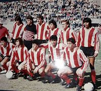

Instituto Atlético Central Córdoba, conocido mayormente como Instituto, es un club deportivo de la ciudad de Córdoba, Argentina. Fue fundado el 8 de agosto de 1918. Su equipo de fútbol masculino participa de la Primera División de Argentina.3 Su actividad deportiva comenzó en 1919, con la afiliación a la Liga Cordobesa de Fútbol, empezando en la segunda división. Hasta el día de hoy, el equipo ha conseguido 12 títulos de la federación, ocho de ellos en la primera división. En 1973, inició su larga trayectoria por los Campeonatos Nacionales de la AFA. Desde entonces, acumula 23 participaciones en la primera división (contabilizando los Campeonatos Nacionales) y 25 participaciones en la B Nacional, estando en la actualidad en los puestos 27.º de las tablas históricas de cada categoría respectivamente. Su estadio es el Juan Domingo Perón, ubicado en el Barrio Alta Córdoba y con capacidad para 26000 espectadores.4Actualmente cuenta con 34000 socios.5 Su clásico rival es el Club Atlético Racing de su misma ciudad, y además tiene rivalidad con los dos clubes más importantes de la misma ciudad, Belgrano y Talleres. El club se coronó campeón dos veces en AFA, ambos títulos conseguidos en la B Nacional, en los torneos de 1998-99 y 2003-04.
 Contacto y informacion reciente